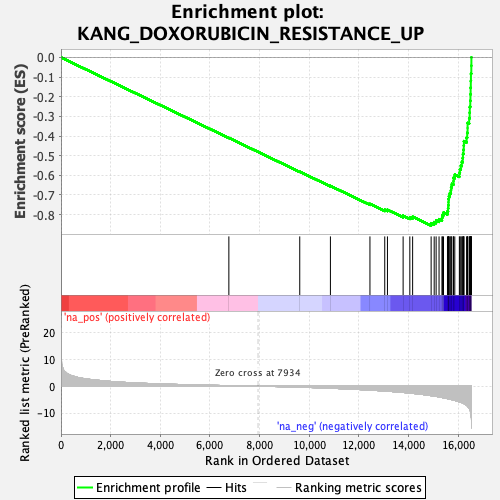
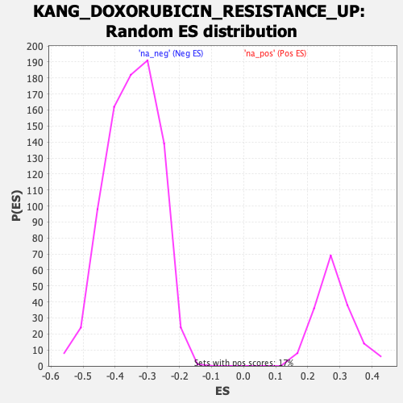

| | | Dataset | DE_genes2 |
| Phenotype | NoPhenotypeAvailable |
| Upregulated in class | na_neg |
| GeneSet | KANG_DOXORUBICIN_RESISTANCE_UP |
| Enrichment Score (ES) | -0.8558325 |
| Normalized Enrichment Score (NES) | -2.477717 |
| Nominal p-value | 0.0 |
| FDR q-value | 0.0 |
| FWER p-Value | 0.0 |
Table: GSEA Results Summary

Fig 1: Enrichment plot: KANG_DOXORUBICIN_RESISTANCE_UP
Profile of the Running ES Score & Positions of GeneSet Members on the Rank Ordered List
| PROBE | GENE SYMBOL | GENE_TITLE | RANK IN GENE LIST | RANK METRIC SCORE | RUNNING ES | CORE ENRICHMENT | | 1 | FOSB | | | 6760 | 0.192 | -0.4095 | No |
| 2 | POLA2 | | | 9615 | -0.343 | -0.5815 | No |
| 3 | NPIPA1 | | | 10850 | -0.742 | -0.6538 | No |
| 4 | DTYMK | | | 12442 | -1.447 | -0.7454 | No |
| 5 | RRM1 | | | 13038 | -1.791 | -0.7753 | No |
| 6 | CENPM | | | 13147 | -1.858 | -0.7754 | No |
| 7 | ABCC1 | | | 13778 | -2.311 | -0.8056 | No |
| 8 | ASF1B | | | 14048 | -2.550 | -0.8131 | No |
| 9 | TYMS | | | 14161 | -2.652 | -0.8107 | No |
| 10 | MCM4 | | | 14906 | -3.510 | -0.8437 | Yes |
| 11 | PLK4 | | | 15029 | -3.687 | -0.8383 | Yes |
| 12 | ZWINT | | | 15107 | -3.798 | -0.8298 | Yes |
| 13 | CDCA8 | | | 15225 | -3.955 | -0.8232 | Yes |
| 14 | TK1 | | | 15344 | -4.187 | -0.8159 | Yes |
| 15 | BARD1 | | | 15360 | -4.219 | -0.8022 | Yes |
| 16 | CDC20 | | | 15404 | -4.309 | -0.7898 | Yes |
| 17 | GINS1 | | | 15564 | -4.619 | -0.7835 | Yes |
| 18 | FANCI | | | 15588 | -4.678 | -0.7687 | Yes |
| 19 | NQO1 | | | 15597 | -4.709 | -0.7528 | Yes |
| 20 | NEMP1 | | | 15605 | -4.735 | -0.7369 | Yes |
| 21 | AURKA | | | 15607 | -4.737 | -0.7205 | Yes |
| 22 | PLK1 | | | 15623 | -4.763 | -0.7049 | Yes |
| 23 | OIP5 | | | 15659 | -4.836 | -0.6903 | Yes |
| 24 | RRM2 | | | 15702 | -4.911 | -0.6758 | Yes |
| 25 | FOXM1 | | | 15710 | -4.931 | -0.6591 | Yes |
| 26 | BIRC5 | | | 15741 | -4.998 | -0.6437 | Yes |
| 27 | RFC4 | | | 15807 | -5.149 | -0.6298 | Yes |
| 28 | CDK1 | | | 15810 | -5.156 | -0.6120 | Yes |
| 29 | TPX2 | | | 15859 | -5.288 | -0.5966 | Yes |
| 30 | MAD2L1 | | | 16043 | -5.805 | -0.5876 | Yes |
| 31 | ATAD2 | | | 16065 | -5.853 | -0.5686 | Yes |
| 32 | PRC1 | | | 16103 | -5.960 | -0.5502 | Yes |
| 33 | BUB1 | | | 16142 | -6.084 | -0.5314 | Yes |
| 34 | LMNB1 | | | 16178 | -6.259 | -0.5118 | Yes |
| 35 | NCAPG2 | | | 16188 | -6.289 | -0.4906 | Yes |
| 36 | HJURP | | | 16210 | -6.380 | -0.4698 | Yes |
| 37 | RAD51AP1 | | | 16221 | -6.439 | -0.4481 | Yes |
| 38 | KIF4A | | | 16226 | -6.459 | -0.4259 | Yes |
| 39 | BUB1B | | | 16335 | -7.102 | -0.4079 | Yes |
| 40 | DSCC1 | | | 16359 | -7.253 | -0.3841 | Yes |
| 41 | NUSAP1 | | | 16374 | -7.420 | -0.3593 | Yes |
| 42 | CDC6 | | | 16375 | -7.439 | -0.3335 | Yes |
| 43 | CENPA | | | 16438 | -8.139 | -0.3091 | Yes |
| 44 | PBK | | | 16458 | -8.487 | -0.2808 | Yes |
| 45 | CDKN3 | | | 16463 | -8.532 | -0.2515 | Yes |
| 46 | MKI67 | | | 16483 | -9.193 | -0.2208 | Yes |
| 47 | POLQ | | | 16490 | -9.648 | -0.1877 | Yes |
| 48 | TOP2A | | | 16497 | -9.873 | -0.1539 | Yes |
| 49 | NCAPG | | | 16504 | -10.079 | -0.1193 | Yes |
| 50 | ASPM | | | 16510 | -10.824 | -0.0821 | Yes |
| 51 | HMGB2 | | | 16525 | -11.801 | -0.0421 | Yes |
| 52 | HMMR | | | 16528 | -12.240 | 0.0002 | Yes |
Table: GSEA details [plain text format]

Fig 2: KANG_DOXORUBICIN_RESISTANCE_UP: Random ES distribution
Gene set null distribution of ES for KANG_DOXORUBICIN_RESISTANCE_UP